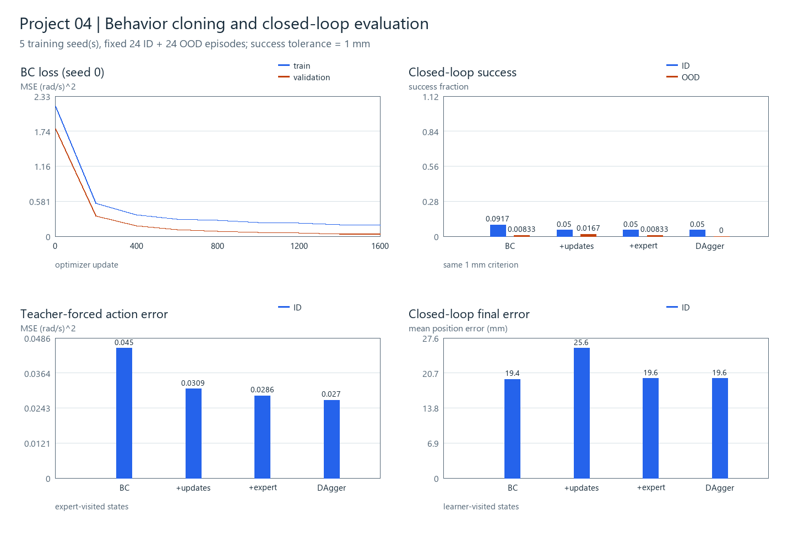
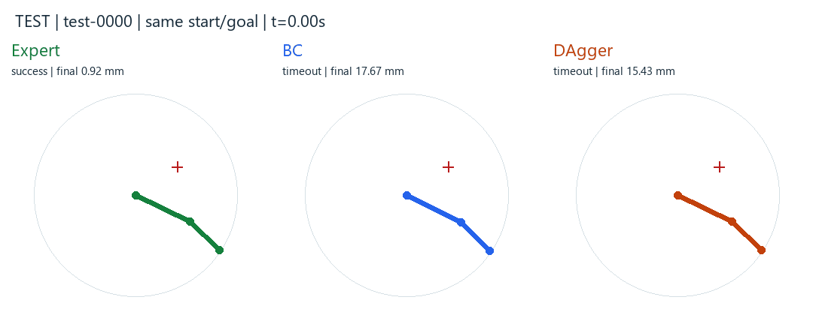
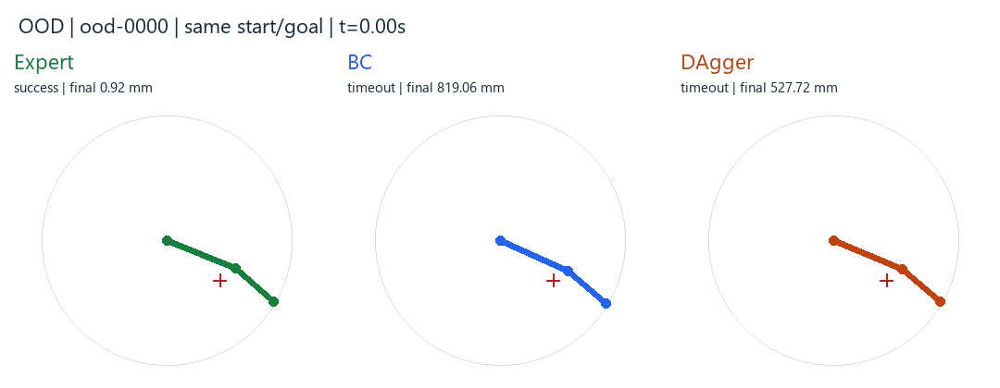

5个训练种子；每种子固定24个ID与24个OOD目标；成功容差1 mm，最长600步。ID目标角度0.10–1.30 rad，OOD为−1.30–−0.10 rad。数字是本次实验测量，原始结果见summary.json。
BC：基础训练；+updates：同数据追加训练；+expert：追加新专家轨迹；DAgger：追加学习策略访问状态的专家标签。三个追加分支具有相同更新步数，后两者新增标签数一致；环境步数与壁钟成本分别记录。五种子固定测试集衡量训练随机性，跨数据集和实机泛化另行验收。
| 方法 | ID成功率均值±训练种子SD | OOD成功率均值±SD | ID最终误差均值(mm) |
|---|---|---|---|
| expert | 100.0% | 100.0% | 0.963 |
| zero | 0.0% | 0.0% | 649.634 |
| bc | 9.2% ± 3.5% | 0.8% ± 1.9% | 19.447 |
| bc_more_steps | 5.0% ± 5.4% | 1.7% ± 2.3% | 25.559 |
| bc_more_data | 5.0% ± 4.6% | 0.8% ± 1.9% | 19.619 |
| dagger | 5.0% ± 1.9% | 0.0% ± 0.0% | 19.607 |

演示使用冻结测试集第一项；每条轨迹由对应控制器独立执行。先看专家，再看BC和DAgger，比较运动方向、停留位置和最终误差。


这是二连杆运动学算法实验；相机、动力学接触与Panda操作在后续闸门中增加。